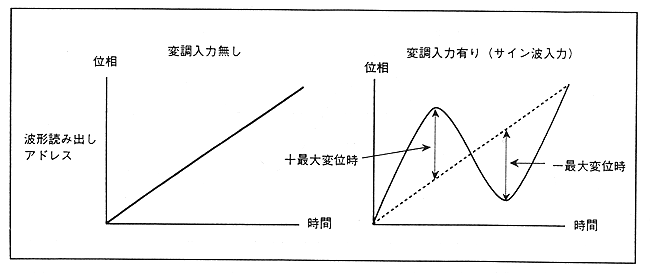

∙ For FM speech synthesis, the time-phase function is linear when no modulation waveform is added. However, when a modulation waveform is added, the displacement corresponding to the modulation waveform is added, so the linear time-phase waveform becomes non-linear (non-linear). This displacement is maximized when ZD takes a ± maximum value. The modulation degree of MDL represents the displacement (maximum displacement) of the waveform address when ZD takes ±± maximum value with waveform data (sine wave) set to 1K word.
Table 4.17 Address maximum displacement by register setting value
| MDL [3: 0] | 0-4 | 5 | 6 | 7 | 8 | 9 | A | B | C | D | E | F |
Address maximum displacement ± | 0 | 32 | 64 | 128 | 256 | 512 | 1024 | 2048 | 4096 | 8192 | 16384 | 32768 |
・ Comparing Table 4.16 and Table 4.17, the relationship of π = 512 (when MDL = AH) is obtained. In Table 4.16, the waveform data (sine wave) is considered as 1 period = 1K word (1024 words), but the mathematical expression method defines the length of one waveform period as 2π. Therefore, since this FM speech synthesis uses a sine wave of 1 period = 1K words, the maximum address displacement 512 can be expressed by π. The expression method using π is effective only when the period of the waveform data is 1K word. In other cases, use the expression method by address displacement shown in Table 4.17.
∙ When performing FM speech synthesis, hold waveform data for 3 cycles. The reason is that address displacement occurs. In SCSP hardware, waveform data must be stored in memory up to 1K word address displacement (MDL = "AH"), but if it exceeds 1K words, the hardware automatically performs clipping processing. Therefore, there is no need to leave more waveform data than 1K words.